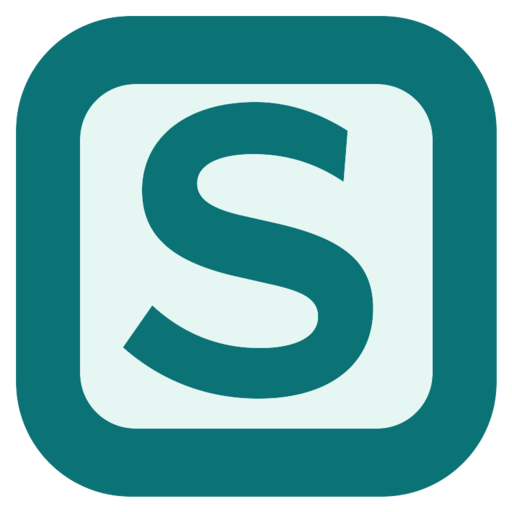

SidePiece docks a slim Telegram panel to the edge of your Mac or Windows screen. Touch the edge and your chats slide out. Move away and it tucks itself back in.
Unofficial. Not made by, affiliated with, or endorsed by Telegram.
For Mac
curl -fsSL https://sidepiece.onrender.com/install.sh | bash
Mac: paste into Terminal, done. It downloads the beta, installs to /Applications, clears the macOS block, and launches the app.
Free during beta · macOS 12+ · unsigned build · download the DMG manually · email to join the beta list
For PC
Download for Windows (x64)Windows x64 beta · unsigned installer · first PC tester check pending. Windows may warn about an unknown publisher; open only if you trust this build.
That "Open Anyway" step matters. The beta isn't signed with an Apple Developer ID yet, so the first launch shows "SidePiece Not Opened". Click Done on that dialog, then open System Settings > Privacy & Security, scroll to the bottom, and click Open Anyway next to SidePiece. Terminal alternative: xattr -dr com.apple.quarantine /Applications/SidePiece.app
Only use Open Anyway if you trust this build.
No windows to manage, no tabs to lose. Three steps and it's part of the screen.
Everything the beta does today, no filler.
This is an early, independent build. Here's the straight version.
xattr -dr com.apple.quarantine /Applications/SidePiece.app. Use Open Anyway only if you trust this build.
Free during beta. Mac: macOS 12+. PC: Windows x64, first tester check pending. Bugs and feedback go to arbonomous@proton.me.
Download beta (DMG) Download Windows x64 beta (EXE)Windows installer is unsigned and has not yet been tested on a PC. Expect an unknown-publisher warning.
Unofficial. Not made by, affiliated with, or endorsed by Telegram.